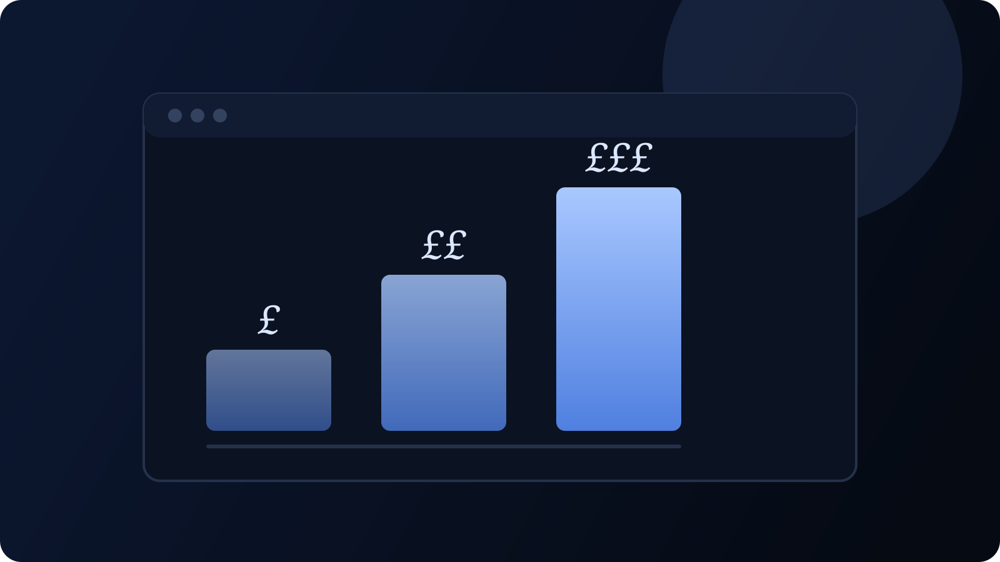

Websites
How Much Does a Small Business Website Cost in the UK in 2026?

Ask five people what a website costs and you will get five answers, from nothing at all to five figures. They can all be right, because they are describing different things. This guide sets out the real options for a UK small business, what each one roughly costs and what you get for the money.
The three ways to get a website
1. Build it yourself
Website builders such as Wix and Squarespace let you put a site together from a template. You usually pay a monthly subscription, often between £10 and £30, for as long as the site is live.
The money is not the real cost here. The time is. Choosing a template takes an afternoon. Writing the words, sorting the photos and making it look right on a phone takes much longer, and many owners give up halfway. If you enjoy that sort of thing, it is a fair option. If you do not, a half finished site can cost you more work than it wins.
2. Hire a freelancer or a small studio
This is where most small businesses end up. Expect to pay roughly £500 to £3,000 depending on how many pages you need and what the site has to do. A handful of pages with a contact form sits at the lower end. A site with a page for every service, case studies and a stock list you can update sits higher.
You are paying for someone to do the thinking as well as the building: what pages you need, what they should say and how a customer gets from landing on the site to picking up the phone.
3. Hire a larger agency
Bigger agencies typically start at a few thousand pounds and go well beyond £10,000. That buys a team: strategy, design, development and project management. It makes sense for a large or complicated site. For a local trade or a small shop it is usually more than you need.
What actually changes the price
- The number of pages. Five pages is a different job from twenty five.
- Who writes the words. If the builder writes them for you, that is real work and it should be in the quote.
- What the site has to do. Taking payments, managing stock or booking appointments all add time.
- Whether you can edit it. A login that lets you change things yourself costs more up front and saves money later.
- Search set up. A site planned around what your customers search for takes longer than one that simply looks nice.
The running costs people forget
The build is a one off. These are not:
- Your domain name. Usually around £10 to £20 a year for a .co.uk or .com.
- Hosting or a platform fee. Anything from nothing to £30 a month. Builders charge for as long as you use them. Many custom built small sites can be hosted for free.
- Email at your domain. A few pounds a month per inbox if you want one.
- Changes. Either your own time, or a small monthly fee for someone to make them for you.
Over three years, a £20 a month builder plan adds up to £720 before you have spent an hour on the site itself. It is worth doing that sum before deciding the cheap route is the cheap route.
Six questions to ask before you pay anyone
- Is the price fixed, and what exactly does it include?
- Who writes the words and supplies the photos?
- What will I pay each month once it is live?
- Will I own the site and the domain?
- Can I change things myself?
- What happens at launch to help Google find it?
A good builder will answer all six without hesitating. If any answer is vague, ask again before you pay a deposit.
What we charge
For transparency, our own website design service starts from £750 for a simple site and from £1,500 for a full build with service pages, case studies and a quote form. Online stores start from £3,000. Most of our sites have no monthly hosting fee. You can see two of them in our case studies for Elite Southwest and Vault Aquatics.
Frequently asked questions
Can I get a website for free?
You can get a basic page for free on some builders, usually with their branding on it and without your own domain. It is fine for testing an idea. It rarely looks professional enough to win work.
How long does a small business website take to build?
A simple site usually takes two to three weeks. A larger one takes four to six. Delays are nearly always about waiting for photos and answers, not the build itself.
Is it cheaper to rebuild an old site or start again?
If the old site is on a builder you want to leave, starting again is usually quicker and cleaner. You can keep your domain and your email either way.